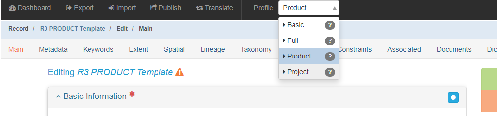

Product Records: Overview
The Product Records section will cover how to create a metadata record for a product. A product can be anything from a document or presentation or website to a dataset or programming code. mdEditor offers an extensive list of product options, of which “product” should never be used.
Before You Begin
1. Adjust mdEditor Settings
Metadata Repositories: Make sure your default settings are correct for the SA Science Catalog and Data.gov. See Settings.
Parent Identifier: In the publishing settings, enter your SA regional ScienceBase project folder’s identifier in the “Default Parent Identifier” field.
2. Select the “Product” Profile:
After initially creating your project record, but before you begin adding metadata, select the metadata record’s profile type. In the main menu’s Profile drop-down options, select “Product”. This will limit the number of available tabs and only show tabs that contain fields that are required for product creation.

3. Ensure Contacts are loaded into mdEditor:
In mdEditor, contacts are created separately from individual records, and then stored within a library in mdEditor. Once contacts have been entered or imported into mdEditor, they can be used in metadata records.
SA has a “seed list” of contacts that that contains standardized information for common partner agencies, USFWS regions, and the SA Network Data Steward. This Contacts Seed file (as a .json) can be downloaded from the mdEditor Seed Contacts item page. and then imported into mdEditor using the Import tab.
Edit a Product
- Import or create your product record (see workflow).
- Choose the specific Resource Type that describes your product. Do not choose the generic “product.”
- Select the Product Profile: from the Main Menu (Top Navigation Bar) select “Product” from the profile drop-down menu.
- Fill out metadata information for the following tabs:
Main Tab
Metadata Tab
Keywords Tab
Taxonomy Tab
Extent Tab
Lineage Tab
Distribution Tab
Constraints Tab
Dictionaries Tab
Documents Tab
- If applicable, the Associated Tab allows your product to be associated with other metadata records.